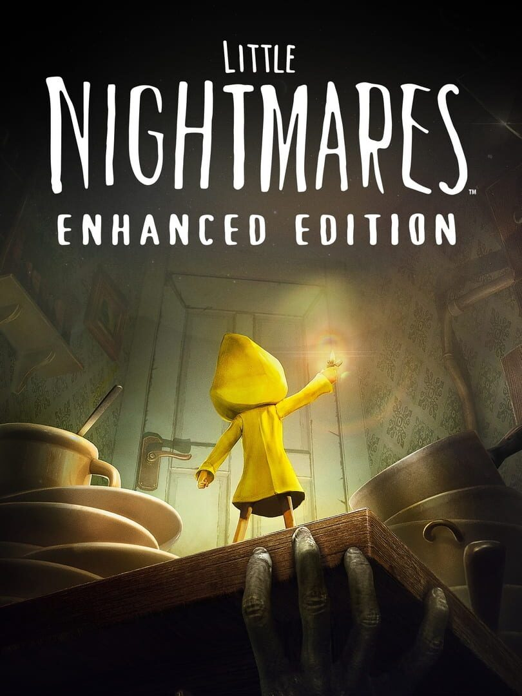

Little Nightmares Enhanced Edition
Little Nightmares Enhanced Edition
Detalhes
 |
|
| Tempo de jogo | Não Jogado |
| Última Atividade | Nunca |
| Adicionado | 07/06/2026 0:35:52 |
| Modificado | 07/06/2026 2:32:41 |
| Status de Conclusão | Not Played |
| Biblioteca | Steam |
| Fonte | Steam |
| Plataforma | PC (Windows) |
| Data de Lançamento | 10/10/2025 |
| Pontuação da Comunidade | 80 |
| Avaliação da crítica | |
| Pontuação do Usuário | |
| Gênero | Adventure Platform Puzzle |
| Desenvolvedor | Tarsier Studios |
| Editor | Bandai Namco Entertainment |
| Funções | Single Player |
| Links | Xbox Official Website Steam Wikipedia Twitch |
| Tag | |
Descrição
(Re)Descubra o conto sombrio e peculiar de Little Nightmares, agora contando com gráficos incríveis em 4K e 60 FPS.
A Little Nightmares Enhanced Edition permite que você escolha entre os modos Qualidade ou Desempenho para favorecer o visual ou a taxa de quadros, de acordo com as suas preferências.
Desfrute de efeitos visuais aprimorados, incluindo reflexos RTX, efeitos de água, mais partículas e sombras volumétricas.
Adicionamos mais auxílios para melhorar a experiência geral do jogo.
A franquia Little Nightmares conquistou milhões de fãs desde 2017. Agora, chegou a sua vez de tentar sobreviver nos jogos de terror mais cativantes já feitos.
Entre no papel de Six, uma criança solitária perdida em uma enorme embarcação metálica conhecida como A Bocarra, recheada de perigosas versões distorcidas de adultos. Você precisará fazer o seu melhor para fugir com vida, ou seu destino será pior do que se pode imaginar.
OBSERVE SEUS ARREDORES
Você acorda em uma câmara escura e úmida. A única coisa que você tem é o seu isqueiro. Você não lembra de como chegou ali, mas está claro que está em perigo. Apenas seu olhar atento e pensamento rápido podem salvar sua pele.
ENCONTRE UMA SAÍDA
Este mundo não foi feito para crianças, mas com um pouquinho de imaginação, você pode usar sua estatura como uma vantagem. Escale gavetas e estantes para encontrar passagens do seu tamanho pela Bocarra, nesses lugares pequenos demais para adultos, você ficará a salvo... pelo menos por enquanto.
FUJA DOS RESIDENTES
Os habitantes da Bocarra só fazem uma coisa com as crianças, e não é boa. As crianças que não quiserem ser capturadas devem se esconder e andar com cuidado enquanto estão por aí. Em alguns casos, uma distração pode chamar a atenção deles para que você possa correr para a liberdade. Mas cuidado: se você fizer barulho demais, os Residentes vão fazer de tudo para pegar o que encontrarem.
CORRA PELA SUA VIDA
Às vezes, tudo o que se pode fazer é correr. Se sobreviver por tempo o suficiente para chegar a um lugar fora do alcance dos Residentes, talvez você sobreviva.
Você consegue sair da Bocarra e alcançar a liberdade? A Six conta com você. Boa sorte, pequenino.
Jogos salvos não podem ser transferidos de Little Nightmares (versão base) para o Little Nightmares Enhanced Edition (e vice-versa).